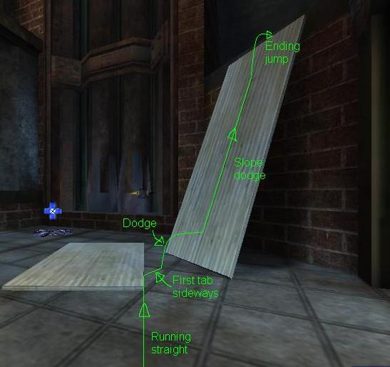
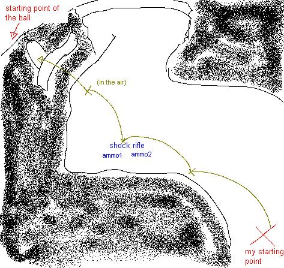

Movement
Do you believe that my being stronger or faster has anything to do with my muscles, in this place? - Morpheus (Laurence Fishburne), The matrix
Moving around in UT2004 is a lot more complex than in other First Person Shooters. There are so many different moves that it will take some time before you get the hang of it. Some of these moves go back to UT2003. Others origin from the first Unreal. All in all, they don't make things easy for the new players. You can get to most places in the same way as in other Shooters, but you'll go noticeably slower than someone who uses the specific options. These skills are also crucial in combat when it comes to avoid incoming fire.
There are even groups of players that focus just on their movement capabilities,
trying to make the hardest trick jumps possible (somewhat like in the
Tony Hawk Pro Skater games). Many of the custom Assault maps have either
'Skills' or 'Trials' in them. These maps put everyone
on the same team; the only objective is to survive the series of puzzles and
jumps.
Dodge Pro Modification, a custom
gametype, has the same objective. These maps are a lot harder (hence
the 'pro' in the name). If you can't figure out how to finish a level,
you can find many demo's of players. They also have a movement
guide that's more in-depth than what this page has to offer.
Moving around graceously is an art. It might sound weird, but when I'm playing UT, I would consider myself dancing rather than moving. If you can catch up to the rythm of the game, moving around becomes more natural and thus easier.
Basic moves
Forward, backward, strafe left, strafe right: your basic movements. The speed is always the same, regardless of the direction. Running has no influence on your firing accuracy.
Walk: holding down this button slows you down and muffles your footsteps. Walking around is exactly as 'fast' as crouching around.
Crouch: crouching makes you a smaller target and also silences footsteps.
While holding the crouch button, you can't fall off ledges. It's
also used to fly lower in an airborne vehicle, dive in deep water or go
down a ladder.
Crouching isn't a smart idea: you're making an easy target out of yourself.
Unlike UT99, crouching doesn't prevent headshots.
Jump: regular jumps are kinda rare now that double jumping is available. Holding the button can also be used to swim up, fly higher in a raptor or cicada, or climb a ladder.
Double jump: if you press the jump button again at the peak of a normal jump, you'll perform a double jump. This kind of jumps are used fairly often to jump on stuff and occasionally to avoid splash damage. This technique is the base of most advanced jumps.
Dodge: pressing any direction twice in rapid succession will cause your character to leap sideways to that direction. This is the preferred way to avoid an incoming projectile.
Walldodge: you don't have to be on the ground to be able to dodge. Just being in the vicinity of a wall will allow you to dodge away from the wall. It needs to have a good grip: walls with decoration meshes, edges and/or holes are bad candidates. You can't stack dodges: you must at least touch the ground before being able to perform a new (wall-)dodge.
Dodgejump: if you press the jump-button in the middle of a (wall-)dodge, you'll add an extra boost to the dodge. Just as with the dodges: you can't stack more than two jumps, so forget about doublejumping and then making a walldodgejump.
Running dodge: this is a variation on the dodgejump. By holding a direction while dodging to a direction that's 90° different to it, you will make a bigger dodge than normal. It's most common to hold forward pressed with your middle finger, and then dodge to the side with either your ring-finger or index finger.
Running dodgejump: similar to the running dodge, but using a dodgejump rather than a dodge.
Boosting: UT2003 had an extra variant on the walldodge: by standing next to a wall and pressing <direction>, <jump>, <the same direction>, you would do a jump that was further and higher than any other. This move still exists in UT2004, but it is reduced in power (nerfed, as they say). Boosting in UT2004 covers the same distance and height as a normal walldodgejump.
Flips and cartwheels: performing any of the previous moves might trigger animations depending on the character. Some do a flip, others do a cartwheel, others don't do anything. You won't notice any of this from the first person mode: the animations won't hinder your aim in the least and each character has the same agility. Use 'behindview' (F4 by default) to see what kind of animations your model can do.
Slope dodge: dodging toward a steep slope will make you attempt to climb that slope. You can increase your speed (and chances to climb the slope) by doing the running dodge maneuver against the wall, and jumping at the highest point of your dodge. The most well-known slope dodges are the plates in DM-Rankin.
Lift jump: in the Unreal-series, you can use the momentum of an escalating lift to boost your jumps. Simply press the jump-button when the lift is at its highest speed to launch yourself.
Tips regarding non-weapon movements
If you just keep playing the normal gametypes, I doubt your movement skills will improve much. You need to train these in a secluded environment. I suggest to download some of the Assault Trial maps I spoke about in the intro (AS-TempleOfTrials is a good one). The Dodge Pro Mutator will help as well, provided you don't become frustrated because the jumps are so hard. Anyway...after some training, the moves will become a routine, something you barely have to think about. This allows you to focus on more important things...
Dodgejumpwalking: if there is one thing that separates beginners and veteran players, then it's the amount of dodges they make throughout the match. Veterans don't dodgejump often...they do it all the time! This seems like a lot of work, but it's all just the repetitive performance of the same action over and over again.
 The first part of the action is to hold down a direction, usually forward. As you can see on the picture (the thin black arrow), you're not facing your destination, but more of a 30° angle to either the left or the right side of it. While keeping your middle finger on the forward button, use your index finger or ring-finger to dodge(jump) to the side. The blue arrow shows the theoretical dodgejump, which is perpendicular to your running position. However, the real dodge(jump), positioned on the big black arrow, has an altered course, because the forward button is pressed all the time. The result is a zigzag maneuver that is still quite a bit faster than simply walking from A to B.
The first part of the action is to hold down a direction, usually forward. As you can see on the picture (the thin black arrow), you're not facing your destination, but more of a 30° angle to either the left or the right side of it. While keeping your middle finger on the forward button, use your index finger or ring-finger to dodge(jump) to the side. The blue arrow shows the theoretical dodgejump, which is perpendicular to your running position. However, the real dodge(jump), positioned on the big black arrow, has an altered course, because the forward button is pressed all the time. The result is a zigzag maneuver that is still quite a bit faster than simply walking from A to B.
There is a variant on dodgejumpwalking that comes closer to a straight line (and is therefore slightly faster). As with the previous method, you should keep your forward key pressed at all times. This time, you keep facing the destination point. Then turn 30° to the left, and dodge(jump) immediately to the right. During the jump, readjust your aim back toward the destination. Of course, the direction of turning and dodging can be reversed. It's even best to practice this in both directions so you don't have to turn your back to possible danger.
Edgewalking: almost all levels have them: gaps that can be crossed with one well-timed dodgejump. To optimize your chances, it's best to walk alongside the edge first, as close as possible. Then do the running dodgejump to the side.
Note: if the edge consists of a brush rather than a mesh, making a jump or dodge while being too close to the edge eliminates the extra jump for some reason. Keep a slight margin to make sure this doesn't happen to you.
The importance of timing : not all (running) dodgejumps and double jumps are alike. This is only logical: to keep the extra jump executable, Epic has set a certain margin on the time in which you can press the jump button to add the extra jump. As a result, pressing the jump button later in the given timeframe gets you higher and/or further than when you quickly press it immediately after the previous maneuver.
The best example is TempleOfTrials-v4...the first room of the 'Pro' tomb can only be crossed with a running dodgejump that is sufficiently timed. If you practice this room enough (hint: use the translocator), you will improve your moving speed another notch.
Slope dodges: the running dodgejump doesn't only cover the most ground, it also allows for the fastest and most reliable way to perform slope dodges. Alas, it also makes it harder to perform them, since they have to be made from a moving position. The trick is to approach the slope in an angle of 30°, so the running dodgejump to the side goes straight at the slope (or as straight as possible). The picture on the right illustrates how to make a slope dodge on DM-Rankin. As you can see, the position of the plate on the ground isn't a coincidence ;-)
{kind=link}
The use of z-axis: most of what's been said before is best performed on flat, horizontal ground or - in the case of walldodges - flat, vertical walls. Dodging to an upward position usually stops the move in its track. It's hard to say at what angle, but I estimate around 15° upward is the highest spot you can safely dodgejump to. This means that you should avoid dodging at hills that go up that percentage (you'll notice this quick enough on terrain maps). The opposite is also true: dodging toward a lower position will allow your dodges to go much further.
Running backwards: there are 3 reasons you might want to keep your back-button pressed: to discourage pursuit, to use the shieldgun to prevent damage from someone behind you, and to keep track of someone (more on this later). Running backwards can be very convenient in 1vs1 matches and CTF maps, but it's not easy. It requires practice, and a very good knowledge of the map.
Anticipation moves
The previous moves are about all you need to know when navigating a level without enemies. But wait a second...last I heard, UT2004 was a First Person Shooter, not a First Person Acrobat Fest. Once you're familiar with all the previous moves, you can use those skills to avoid their fire.
Moves against hitscan: always stay unpredictable, moving left and right in regard to their point of view. Add in a couple dodges or regular jumps, and even quick crouches tends to help when facing a sniper at eye level. Just keep dodgejumps to a minimum. The reason is that not all shots are equally easy to hit: the longer someone can predict your path, the easier the shot becomes. The easiest shots are against unsuspecting enemies and enemies in the air, so this is what you should aim to avoid.
Moves against spray weapons: this is the hardest to avoid. The best chances are either to run for cover, or to start a counter-attack. Moving left and right in regard to their POV is once again advised, but dodgejumps are more encouraged.
Moves against explosive weapons: these weapons have the best chances of hitting you at close range, so keeping a distance is your best chance. Unlike the other categories, shooters won't aim at you, but at the ground you're standing on. Dodging isn't a good idea either, since twitch shots are fairly easy to do with these weapons. In other words: you're doomed...
No, wait...I almost forgot: the disadvantage of explosive weapons is a slower reload time. So keep on your toes: as soon as he shoots you, dodge out of harm's way. Especially when you hear he's loading up rockets you shouldn't dodge before he fires; every decent player will shoot directly at your landing spot and kill you.
Flag running: the most common mistake in running with a flag is to take the shortest route back to the basis. You'll get chased, fired upon and killed. As a practice: forget about bringing in the flag. Just aim to survive as long as possible. Once again, unpredictability is the solution. Have you ever stopped flag running to kill that one defender chasing you? Have you ever turned 180° after a corner, dodgejumping amit multiple defenders? Have you ever taken an elevator up just to drop down again before the lift was even halfway? If not, you should try it. Defenders anticipate on what they think you'll do, no matter whether they do it conscious or not. Anything that breaks that routine takes some time to adjust (this depends on the skill of your adversary).
The same goes for Bombing Run, by the way. There are some differences between flag and bomb running, but not when it comes to movement...
Shieldgun jumps
The basic jumps get you on most ledges. However, if you want to make high jumps - or increase the chances of making a jump - then the shieldgun is the best choice you have. It's simple, really: releasing the shieldgun's primary fire will cause a momentum that increases with the time that the fire button was held. If you do this while pointing directly toward a solid object, this will knock you straight back. At the same time, it deals a bit of self damage (somewhere between 20 and 45, depending on the angle and the charge time). Don't let this discourage you: a quick escape can be much more valuable than a mere 40 health.
Notes:
- For obvious reasons, the Assault gametype nerfs the shieldgun completely, to avoid exploits. There, shieldjumps only makes you go slightly higher than a double jump.
- For some reason, the berserk combo increases the shieldgun a lot. The self damage remains the same, but the jumps go a lot higher.
- shieldjumps can be combined with dodges and normal jumps, as long as it doesn't involve 2 dodges or 3 jumps at the same time.
- all shieldgun jumps start by charging the primary fire of the shieldgun. The only thing that differs is the angle and the time of release.
Regular shield jump: look down while the gun is charging. Then press jump and release the fire button at almost the same time.
Hopping (also known as popping): hopping comes down to giving yourself an extra boost while you're going up in the air, against a wall. Look down at an angle of about 30° from the ground and release the button. If you do it right, you will increase your upward momentum. However, even a slight error in the angle will push you away from the wall.
The combination of shield jump + hopping can be used to climb very high
walls. It's very hard to pull off, though, and it requires much health. As such, you will rarely - if ever - see this happen in a normal game.
Shield forward dodge: a variation on the regular shield jump: instead of releasing the fire button while jumping, you should release it while dodging forward. This results in a big, wide jump forward.
Shield backward dodge: another variant on the regular shield jump: position yourself backwards of where you want to go and aim a bit lower than average (45-60 degrees). Dodge backwards and immediately release the fire button when airborne. This technique results in some sort of superdodge that covers quite some ground. Combine this with the double jump and you've got the fastest way to cross a straight floor.
Shield wall dodge: jump towards a wall, and then walldodge away from it while releasing the fire button at the same time. If you time this right, you're boosted away from the wall. This is very hard to pull off, so I don't think you'll see this move often online.
Lift shield jump: like a normal shield jump, but performed while the lift is at its maximum speed.
Traveling with the translocator
As indicated on the weapons page, the translocator isn't so much a weapon but more a means of traveling. It's simple, really:
- select the translocator while aiming at the position you want to go
- press primary fire to throw it
- press alt fire to translocate once the disc is almost in the correct position (you've got to take ping and your own reflex time into account)
- choose a new destination and aim toward it
- repeat steps 2 through 4 until you've reached your destination or until you're out of ammo
The trick is to avoid depleting your ammo while still getting everywhere as fast as possible. You do this by estimating your total traveling distance, and constantly adjusting your use of the weapon by it. There are 3 rules of thumb to follow to effectively travel with the translocator.
Main translocator traveling rule: the further you have to travel, the further you have to throw your translocator disc Momentum rule: translocating keeps all momentum your character might have Half-life rule: use half your ammo to cover half the distance to the final location. |
The main traveling rule is obvious: the best way to avoid depleting your ammo is by estimating the distance to your destination. You have to get there in 6 throws of the translocator, so the throwing distance is actually the real distance divided by 6. Okay...that's a bit simplified version. Check the example below to see how things really work.
The momentum rule is pretty infamous because it requires translocator travelers to stay close to the ground to avoid falling damage from repeatedly teleporting into the air without touching the ground in between. But there's a good side to it: horizontal momentum is maintained as well. For example: it's possible to throw a disc, dodge directly toward that disc and teleport while you're in the air. You will simply finish the dodge on the other side. If you're fast enough, you can even add a jump on the other end, making it into a dodgejump. So in the end, the combination of translocating + basic movement tricks will be the fastest traveling method, no matter how fast and accurate you can throw the disc.
The half-life rule is used to deal with the everchanging environment of the game. Basically, every time you cover half the distance to your destination, you estimate the distance you still have to travel, and adjust this to your traveling method. The name of this rule is derived from the study of radiactive decay (wikipedia link), and has nothing to do with a certain video game ;-)
Example: I'm in BR-Icefields, on the blue team. The ball is currently behind the small doors, and it's being carried by a team member. In order to be helpful to my team I have to be A) in position and B) have some sort of weapon to defend myself and/or the ball carrier. At the moment, I'm being neither, so I have to draw a route that will get me from the spawn point, over the closest weapon (the shock rifle, in this case), to the position of the ball. The situation looks like this:

The current estimated route only uses 4 translocator throws. The reason is because of the half-life rule: by the time I've reached the shock rifle, picked it up and translocated to the ledge, the ball carrier wasn't stationary. The situation is now changed to something like this:

Currently, I have about four ammo left (the movement takes about 2 seconds, so the translocator will have replenished about once). As such, the new route will look somewhat like in the picture. The first thing to realise is that the translocator has to fit through the small door, so take your time at aiming it through. If not, the disc might get stuck next to the door, or bounce back against the wall.
Once the first barrier is passed, you have two possibilities. You can translocate to position 2, or simply dodgejump. Dodgejumping saves one ammo...very important when the ball is close to the red goal. However, since not much players know how to properly counter a translocator monkey, it's definitely safer to translocate from 1 to 2.
The half-life rule once again kicks in somewhere between 2 and 3. In normal cases, you should start to catch up to the carrier at this time. It's possible that he's at position A at this time, in which case your initial route is correct (around this time, it should be possible to translocate to A from 4). Or maybe he has tossed the ball through the door at B? In this case, you shouldn't translocate to 4, but directly to position B (provided it's a safe move). The third possibility is that he is shot down, and that the ball is still at C. In this case, either staying at 3 or getting to 4 is a good move.
Other translocator possibilities
Almost everyone uses the translocator to travel...even the bots do it (though rather noobish, compared to a veteran player). However, there are other things you can do with this device.
Climbing: you probably figured that with the translocator, you can climb all kinds of obstacles. Only the sky(box) is the limit! Small objects are easy: you throw it in a wide angle (aimed a little over the top of the object) and translocate when the disc is on top of the object. Only climbing big objects need some explanation, as these can not be climbed with 'just' one translocator throw.
- first of all, there's the angle you're aiming at: make sure you aim a good deal above the top of the object. You're going to need the extra margin
- every little bit helps: make a doublejump and throw the disc away when you're at the highest point.
- you should translocate when the disc is at the apex. And remember the momentum rule: in the ideal case, press <jump>-<alt fire>-<jump> to include a second doublejump into the total.
- after translocating, you should immediately readjust your aim to just above the object and translocate a second time when the disc is on top of the object.
Most - if not all - objects can be climbed this way. With some practice, you can even do this without receiving falling damage. If you have to resort to a third translocate, receiving falling damage is far more likely...
Wall hugging: this technique is a combination of translocator throwing
and walldodging. Simply throw the disc toward the wall and translocate directly before the disc hits it. Immediately after the transport, dodge(jump) away from the wall.
It takes some practice to do this consistently (just as normal walldodging), but it's a very reliable technique to survive on enemy territory.
Disc dropping: with all the quick throw-and-teleport techniques, you'd almost forget that you can leave the disc behind somewhere. Yes, it can be shot down easily, and yes, without a translocator you're seriously handicapped in your movement capabilities. Still, I know two situations where this might be convenient:
- base guarding: there are levels that have multiple good defensive spots on different distances from the goal/flag. Moving from the goal/flag to the outer spot is risky, since at that time, attackers can get by you (if they have another route to the objective). In this case, you can leave your disc close by the objective to quickly translocate back if you suspect they got around you (betrayed either by the BR radar, or by the message that the flag has been taken).
- in enemy territory: since flag carriers can't translocate, you might as well leave your disc in their base. In the worst-case scenario, it loses them a few seconds while they destroy your disc. Far more often, you'll have a last-resort escape route. Let's say you have the flag and you're being chased by 2 or 3 enemies. Rather than getting killed by them, use the translocator to get back to their base where you can replenish your health and items. Sooner or later, they'll return their flag, which allows you to make another attempt. And finally...if you managed to run all the way back to your base, you'll have instant access to their base again (use the camera to check whether the disc is broken or not).
Flag dropping: a small translocate while carrying the flag will drop the flag. Though avoidable most of the time, it's the best thing to do when you're almost death and have a full-health teammate nearby.
Other weapons
Shieldgun and translocator are the weapons of choice for enhanced movements. While it's possible to perform jump tricks with any explosive weapon, it will rarely be as easy as the shieldgun, and usually ends up with more self damage as well. The Dodge Pro Mod tricking guide offers a better overview here. On this guide, I'll only describe the ones I'm able to perform consistently myself...
Goo jump: this is a damage-free alternative for the shield jump. Start off by making a puddle of bio sludge by firing the same spot up to five times (after 5, the puddle will start to spill). Quickly change to the shieldgun, set up the shield and jump on top of the pile. If you do this right, you will be pushed up about the same distance as with a shieldgun. The shield will absorb all the goo damage (about 50 of your ammo).
Shock jump: this is executed the same way as the shield jump, only with the shock rifle's alt fire mode. Timing has to be a lot stricter this time...
Shock hopping: similar to regular hopping, but by using the shock rifle alt fire instead of the shield gun.